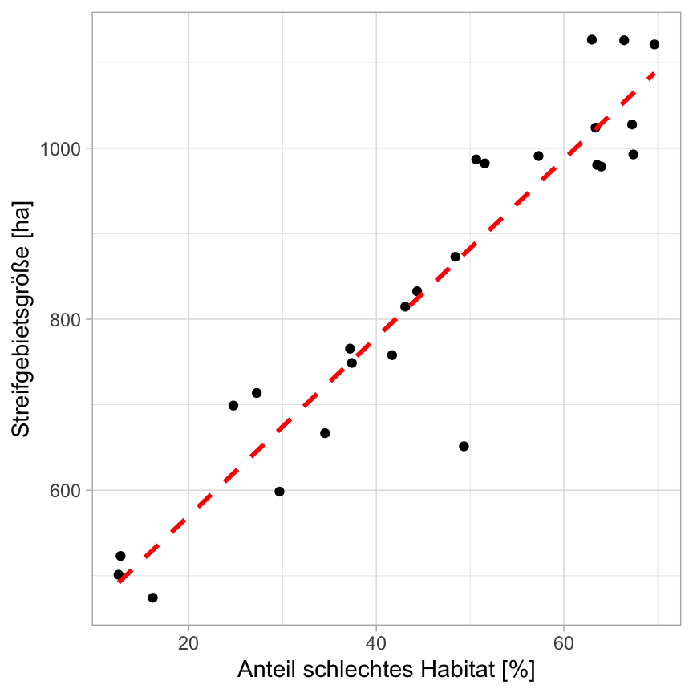
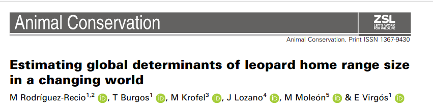
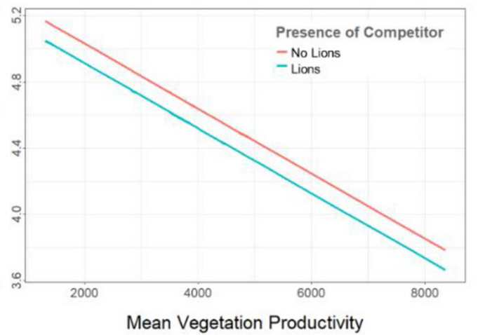
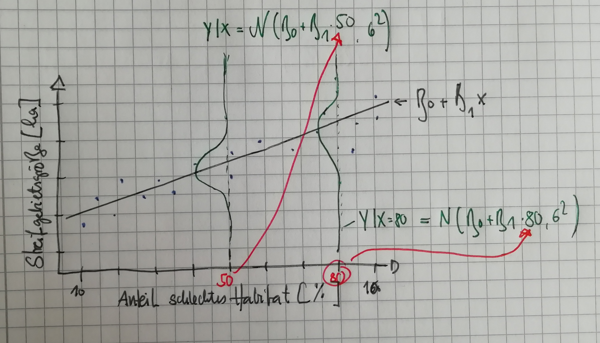
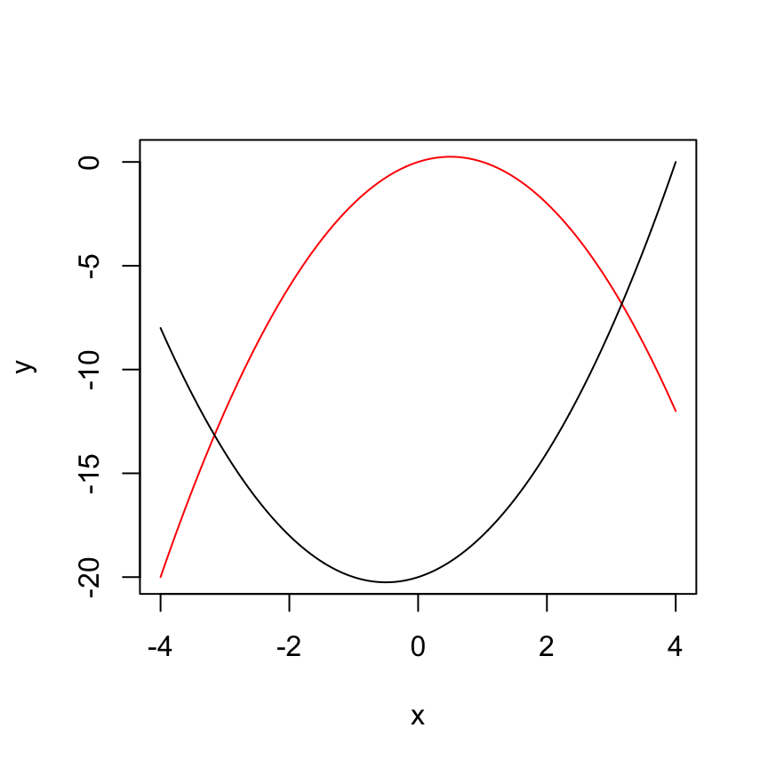

m1 <- lm(hr_groesse ~ habitat, data = dat)
summary(m1)$coef Estimate Std. Error t value Pr(>|t|)
(Intercept) 361.48800 40.3931574 8.949238 5.946307e-09
habitat 10.42664 0.8238889 12.655392 7.592398e-12Erfassung und Monitoring von Wildtieren (SoSe 2026)
![]()
Georg-August Universität Göttingen, Abteilung Wildtierwissenschaften
May 4, 2026
anteil_wald) und den Breitengrad (Spalte y).
Oft haben wir als Ziel den Erwartungswert einer Verteilung zu modellieren, als Funktion von Kovariaten. Z.B. den Mittelwert einer Normalverteilung oder die erwartete Wahrscheinlichkeit einer Bernoulli- oder Binomialverteilung.
Wir wollen nun überprüfen, ob sich der Mittelwert anhand von Kovariaten erklären/modellieren lässt.
Berechnen Sie erneut die Wahrscheinlichkeit, dass der Luchs in einer Zelle vorkommt, aber diesmal mittels eines linearen Models:
y ~ 1) und speichern Sie das Ergebnis als m1 ab.m2 ab.m2 eine Vorhersage für die Vorkommenswahrscheinlichkeit von Luchsen und verwenden Sie für die zwei Kovariaten den beobachteten Wertebereich.Berechnen Sie die Vorkommenswahrscheinlichkeit für Luchse in Göttingen und Kreta. Siehe dazu Aufgabe 1 in der Datei übung_stat2.R.
Ist der einer Zufallsvariabel, den wir im Mittel erwarten. Bei einer Normalverteilung ist es dir Mittelwert.
Beispielsweise könnten wir überlegen: Die Streifgebietsgröße ist eine Maßzahl für die Futterqualität und somit vermuten wir, dass besseres Habitat zu kleineren Streifgebieten führt.
\(\text{Streifgebietsgröße} = f(\text{Habitat})\)
\(\text{Streifgebietsgröße} = N(\mu = \text{Habitat})\)
Oder etwas mathematischer aufgeschrieben: \(\text{Streifgebietsgröße}_i = N(\mu = \beta_0 + \beta_1 x_i, \sigma)\).
Wie sieht das jetzt aus?



Wir modellieren immer den Mittelwert einer Normalverteilung bedingt für einen bestimmten Wert der Kovariaten.

Estimate Std. Error t value Pr(>|t|)
(Intercept) 361.48800 40.3931574 8.949238 5.946307e-09
habitat 10.42664 0.8238889 12.655392 7.592398e-12Für eine komplette Zusammenfassung des Modells, siehe
Können Sie das Beispiel des Streifgebietes auf unser Moderellierung des Luchsvorkommens übertragen?
Wie sieht: \(\text{Streifgebietsgröße}_i = N(\mu = \beta_0 + \beta_1 x_i, \sigma)\) aus? Wie müsste es aussehen?
Ein GLM besteht aus drei Teilen:
Berechnen Sie die Vorkommenswahrscheinlichkeit für Luchse entlang eines Gradienten von für unterschiedliche Waldanteile und Breitengrade.
anteil_wald und anteil_wald^2 berücksichtigen.
Das AIC (Akaike Information Criterion) misst wie gut ein Modell auf die Daten passt. Das AIC hat keine Einheiten und je niedriger der Wert ist, desto besser ist ein Modell.
Berechnen Sie die Vorkommenswahrscheinlichkeit für Luchse in Göttingen und Kreta. Siehe dazu Aufgabe 1 in der Datei übung_stat2.R.
Berechnen Sie die Vorkommenswahrscheinlichkeit für Luchse in Göttingen und Kreta mit einem GLM. Siehe dazu Aufgabe 2 in der Datei übung_stat2.R.
Berechnen Sie die Vorkommenswahrscheinlichkeit für Luchse in Göttingen und Kreta mit zwei GLMs. Welches passt besser zu den Daten? Siehe dazu Aufgabe 3 in der Datei übung_stat2.R.